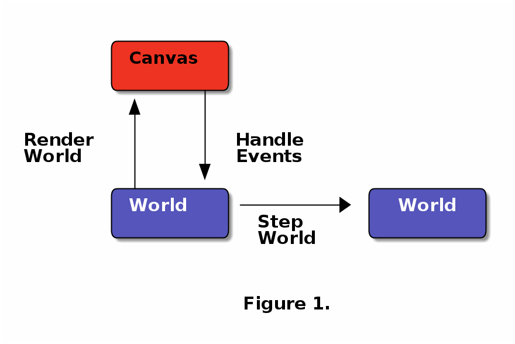

Package Handoff
Table of Contents
1 Introduction
An interesting Euclidean Steiner-Tree like question was posed by Prof. Mitchell while discussing a paper by Craig Tovey giving heuristics for transporting multiple packages from their sources to destinations along a graph with \(r\) co-ordinating carrier robots.
There are \(m\) mobile carrier-robots located initially at \(\{(x^{r}_j, y^{r}_j)\}_{j=1}^m \subseteq \mathbb{R}^2\). For each \(j\), where \(1 \leq j \leq m\), robot \(r_j\) is able to move in any direction with a maximum speed \(v_j\). If two robots meet at a point in the course of their motion, they can exchange an arbitrary number of items they each carry. For simplicity, each of the \(m\) robots can be assumed to have infinite fuel and an infinite weight-carrying capacity.
If you are given \(n\) stationary packages tagged \(p_1, p_2, \ldots p_n\) located respectively at \(\{(x^{s}_i, y^{s}_i)\}_{i=1}^n\) all of which must get to their destinations \(\{(x^{t}_i, y^{t}_i)\}_{i=1}^n\) using the \(m\) robots, how can you construct a schedule for the robots to transport all packages to their destinations "quickly" ?
Depending on the interpretation of "quick", we get different cost criteria. e.g. min-sum: the sum of the travel times of the packages and min-max: the time required for the last package to get to its destination.
A nice real world instance of this problem is one where a taxi-service must co-ordinate its fleet of cabs to transport passengers located at different points on the map, to their destinations.
Here are a few variants or special cases of the above problem that might be of indepenedent interest.
- What if only one package needs to be transported i.e. \(n=1\) ? In this case, min-sum and min-max yield the same cost function.
- What if \(n=1\) and the package must move along a straight-line from its source all the way to its destination. This is also an interesting question for the multiple-robot case. i.e. all packages must move along a straight line from their origin to their destination.
- What if \(n=2\)?
- What if every robot could travel with the same maximum speed \(v_j=V\) but has only limited fuel.
Two additional sub-constraints might be of interest.
- What if every robot is constrained to move back into its original position after it does all its handoffs as required by the schedule.
- What if a robot is allowed to move only along the horizontal and vertical directions?
- Is there a continuous version of this problem? By that I mean, could robots be thought of as distributed uniformly throughout the domain?
2 Theory
3 Experiments
I've created a Github repository, packagehandoff ,which contains the Haskell code for experimenting with various heuristics for solving package-handoff problems. That repository also contains a wiki containing a motley collection of checklists, todos, braindumps and notes-to-self being made while designing library.
The base of the code is similar to that of Pulleys and r-Gather in Python. Here I plan to principally use Haskell. Besides Haskell also some really interesting libraries like quickcheck, reactive-banana, gloss, Diagrams, lenses, the FGL and GSL bindings, the parallelism on offer and of course as a design langauge for algorithms using its type-system. Besides, gloss apparently performs extremely well under threading.
The most important libraries for performing geometric computations will be
- Reactive Banana
- CGAL (via C-wrappers)
- GSL (via C-wrappers)
- Diagrams (for its computations): (it does have the left turn thing)
- Shewchuk's predicates (directly via the FFI)
- Cplex-interface (for optimization)
- GLPK-interface (for linear programming)
- FGL (native Haskell), iGraph and the BGL( both with C bindings via FFI)
- GeoSteiner (C bindings via the FFI)
- Liquid-Haskell and the Dependent Types Extension (for stronger types)
Different heuristics for both single and multi-package routine will be implemented atop the following interactive system outline in the next section.
3.1 Functional Specifications
Just like in the Pulley/rGathers codes, the events will be grouped into major modes:
- Robot input
- Fuel input
- Package input
- Scheduling algorithm input
The current mode of the visualization thus becomes a state-variable! By default, i.e when you start the canvas for the first time around, it will be in robot input mode. Modes will consist of an additive type!!! Key-presses r, f, p, s switches between them. Within a mode, I will use the mouse buttons to insert/modify data and Del to delete data. If you press X , you can stop the animation, and clear whatever "information" you have gathered about the algorithm. And finally, I will be using all of Diagrams' inbuilt data-types for things such as points, vectors, planes and other things.
The schedule is calculated first and only then animated.
Here is a very high-overview of how the code works. The state variable contains the state of the packages and robots. Three of play's arguments are functions as shown by the arrows below. The whole simulation can be thought of as a left-right infinite tiling of this diagram, where each tile corresponds to a point in time.

- Robot Input mode
- To enter press r and show this on the screen.
- The user inputs robot positions by moving a disk over the screen.
- The disk-center correponds to where the robot will be placed.
- The disk-radius corresponds to the maximum speed with which a robot can move.
- Each disk is selectable and movable and deletable, and can be resized with the scroll wheel. On being selected a disk changes color. Multiple disks can be selected and changed at the same time.
- A ticker at the top tells what the (speed) disk size is as you move the scroll wheel up and down. The index of the robot is also displayed.
- Fuel input mode
- To enter these, press f. Again disks are created, and their size correponds to the amount of fuel that they have.
- While the robots are moving you should be able to press a key to see the amount of fuel remaining Maybe ahistogram can be shown on the side, with the fuel going down.
- Package input mode
- To enter press p and show this on the screen
- Package, source and destination pairs are colored with the same color But with a different boundary color. The source has a thick white boundary, the target has a black boundary. All the faces will be transluscent so that we can visualize multiple circles at a particular point.
- When you click at a point on the screen in input mode, you get both the source and target paired as an arrow: source is the tail, and target is the tip. The tip and tail of this arrow can be moved around.
- The sources and targets of the arrows are selectable and deletable but with an important twist!! Whenever you select, s or t, you can see a light pink arrow stretching from the source to its target, with a little piece of text on top of the middle of the arrow indicating the length. This length changes dynamically as we change the positions of the source and target.
- Deleting the source and or target, deletes the entire arrow.
- Choose Scheduling Algorithm
- To enter press a followed by a number corresponding to the algorithm. The list of algorithms is displayed to the terminal. Everything will be managed with the play function.
- The schedule is computed offline and then rendered.
- statically
- dynamically
Both can be supported with call-backs. Suppose you are doing algorithm 1 for problem X Then, doing a (for algorithm mode) 1 (algorithm number) s/d (for static or dynamic animation of the schedule after being computed offline)
- Every algorithm has its own .hs file. Inside this .hs file, you will need to provide implementations of the other two arrows "Render World" and "Handle Events" you see in the diagram above.
- Because of the stupid gloss problem (but see this!), you will have to do the animation last. Once you compute the schedule, you should also write out a YAML file containing the schedule. The YAML file will have a very similar nesting to the record file, and hence will be useful by itself also After writing out the file, start the animation.
The layout of the code files will be as follows:
- Main.hs
- All setup, profiling work goes here, when your program starts maturing, start having independent org files for the main.hs files which setup different sorts of experiments. This imports algorithmX and calls it via play in addition to any other profiling steps.
- ProbX.hs
- Implementation of the arrows Render World, Step World, Handle Events
for problemX in Figure 1. Try to export as little as possible. Just
the arrows, and State should be sufficient. Other helper functions
will not be needed for export. All algorithms to solve variant X of the package
hand-off problem goes into probX.hs. Every problem will have its own
customized game-state, input interaction, and algorithms to solve/approximate it.
Every probX variant gets its own section in this Org file. Thus different variants
are kept independent of each other.
Since all algorithms will be coded in literate-style, you will not need to have too many files to partition your code. This literate document weaves all those files and code-blocks together.
3.2 Source Code
Each subsection here describes the source-code inside the file given by the subsection heading.
3.2.1 PackageHandoffPrelude.hs
PackageHandoffPrelude.hs contains data-structures and routines common to all package-handoff variants. This section describes the code therein. First, import necessary libraries and make some descriptive type-synonyms.
-- | Common Data-Structures and Functions. {-# LANGUAGE NoMonomorphismRestriction #-} module PackageHandoffPrelude where import Diagrams.Prelude import qualified Data.Map as Map -- TODO: Use Liquid Haskell to enforce ≥ 0 at the type level type Speed = Double -- | ≥ 0 type Fuel = Double -- | ≥ 0 type Time = Double -- | ≥ 0 type PkgIndex = Int -- | ≥ 0
The Robot data-type stores information about a single robot such as its positions at time \(t=0\) maximum speed, fuel capacity and other input-data.
data Robot = Robot { initPosition :: Point V2 Double, maxSpeed :: Speed , maxFuel :: Fuel } deriving (Show)
The Package data-type stores the Cartesian co-ordinates of the source and target points of a package.
data Package = Package { source :: Point V2 Double, target :: Point V2 Double } deriving (Show)
The World data-type stores information about the robots and packages obtained from input source (e.g. the Gloss canvas or a YAML file)
data World = World { robots :: [Robot] , packages :: [Package] } deriving (Show)
Note that World knows nothing about the input source from which it came: it might have been a file, or it could have been inserted via a Gloss or a Diagrams canvas. Keeping the algorithmic and the input/output codes strictly decoupled is essential for making the code more modular.
It also doesn't know anything about the time on the clock. That clocking will be taken care by a wrapper data-structure used by the visualization/animation routines of diagrams or gloss.
- Gloss Canvas IO
Now we will need to connect the world to a Gloss canvas. The following data-structures will be used by event-handlers which themselves are wrappers around the algorithmic code.
-- | State of the Gloss canvas data GlossCanvas = GlossCanvas{ currentMode :: Mode, world :: World, schedule :: Schedule } deriving (Show)
Mode in the snippet above refers to the following type. The GlossCanvas is always in one of four states(modes) described in the Mode data-type above. Depending on the current mode of the canvas, it responds differently to mouse and key-press events. To switch between the 4 modes use the r,f,p,a keys. To clear the canvas and reset the world state to empty, use X (Note the caps)
-- | The Gloss Canvas is always in one of four modes data Mode = RobotInput -- ^ Insert Robots onto Canvas 'r | FuelInput -- ^ Adjust the fuel for each robot. 'f' | PackageInput -- ^ Insert Packages onto the Canvas. 'p' | AlgoInput -- ^ Choose scheduling algorithm. 'a' deriving (Show, Eq)
Each robot will travel along a piece-wise linear curve, its vertices being sources/destinations of the packages and the rendezvous points where package-handoffs must occur. With that in mind, it is natural to represent the route for a single robot, as a Trajectory, which is a collection of Link's and the global schedule being a collection of Trajectory s. Each Link is like a arrow in \(\mathbb{R}^2\) tagged data such as which packages travelled along that link, and a description of the package-exchanges that must take place at the link's head.
-- | Schedule for a single robot. type Trajectory = [ Link ] -- | Schedule for a collection of robots type Schedule = [ Trajectory ] -- | An element of a trajectory data Link = Link { head :: Point V2 Double , -- ^ Rendezvous or pick-up point waitTime :: Time ,-- ^ Time of waiting at the head inTransitPackages :: [PkgIndex] ,-- ^ List of packages carried while moving to head givePackagesTo :: Map.Map PkgIndex [PkgIndex],-- ^ Give packages to specified robots takePackagesFrom :: Map.Map PkgIndex [PkgIndex] -- ^ Take packages from specified robots } deriving (Show)
- Disk File IO
3.2.2 SinglePackageRouting.hs
{-# LANGUAGE UnicodeSyntax #-} {-# LANGUAGE NoMonomorphismRestriction #-} {- | This module contains scheduling algorithms and data-structures for routing a single package from point A to point B, where the carrier- robots have varying velocity and possibly limited fuel. -} module SinglePackageRouting where import Diagrams.Prelude import qualified Data.List as List import qualified Data.Map as Map import qualified Data.Set as Set import qualified Data.Function as Function import Control.Monad import Data.Monoid import Data.Colour.Palette.BrewerSet import Graphics.Gloss import Graphics.Gloss.Interface.Pure.Game